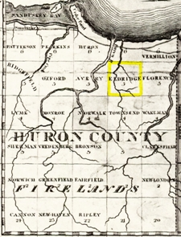
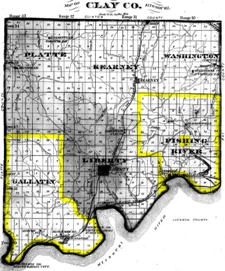
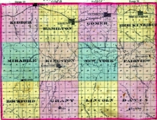
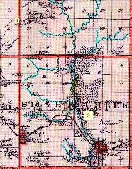
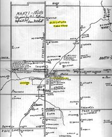
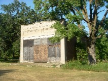
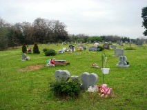

|
Ohio - 1826  On February 7, 1809, the State of Ohio authorized the creation of Huron County. Read more... |
|
Ontario County New York  On January 27, 1789, Ontario County was created and its inhabited portion organized into provisional districts, or towns with an incompleted civil jurisdiction. One of these was called Bloomfield. Read more... |
|
New York Chautauqua County was created by partition of Genesee County on March 11, 1808. The partition was performed for political purposes, but the county were not properly organized, so it was controlled as part of Niagara County. Read more... |
|
Ohio In 1803, Ohio was granted statehood and the state was divided into townships. Kirtland Township was initially part of Trumbull County and then Geauga County. Read more... |
Buckley Burnham Anderson was born January 14, 1819 in Eldridge Township (now Berlin), Huron County (now Erie) in Ohio. Buckley’s twin brother Blakely B Anderson was born the same day. Buckley’s parents were John Anderson and Lydia Kellogg. They had married the previous year on March 5, 1818 in Eldridge Township, Huron County, Ohio.
Western Reserve Map including Firelands - 1826 |
Buckley’s father John Anderson was born on March 9, 1796 in Mansfield Township, Tolland County, Connecticut. The Andersons had lived in Mansfield Township for several generations, back to John’s great-grandparents Robert and Abigail Anderson, who had arrived there back in 1722.
Buckley’s mother Lydia (Kellogg) Anderson was born July 21, 1792 in Hebron, Tolland County, Connecticut. Lydia’s grandparents Moses and Jerusha Kellogg had moved to Hebron from West Hartford, Connecticut.
By 1810, the Anderson family was living in Willington Township whereas the Kellogg family was living in Tolland Township both in Tolland County, only a few miles apart. Because of their respective locations, it is likely that John and Lydia knew each other. So when Lydia’s parents decided to move the wilderness of Ohio likely as part of the Firelands settlement after the War of 1812 which ended in 1815, John left his parents and siblings behind and moved with the Kellogg family to Eldridge Township, Huron County, Ohio in 1816. The Firelands tract was land set aside from the Connecticut Western Reserve as compensation for Connecticut residents who lost homes in the revolutionary war.
All of Buckley’s siblings were born in Eldridge Township over the next fifteen years. They were:
- Twin brother Blakely B born January 14, 1819;
- Sister Celia B born March 20, 1820;
- Brother Brigham born April 23, 1821;
- Sister Mary born August 5, 1822;
- Brother Aaron Burr born August 12, 1823;
- Sister Melissa born December 25, 1824;
- Brother Amos born April 13, 1826;
- Sister Elisha born October 22, 1827;
- Twin brother Elijah born October 22, 1827;
- Brother William Wallace born April 25, 1830;
- Brother Henry Morton born August 12, 1831;
- Sister Harriet born December 29, 1833.
For unknown reasons, several of Buckley’s siblings died as young children around 1830, while the family was living in Eldridge Township, Huron County. Those children who died then were Celia, Brigham, Melissa, Amos, Elisha and Elijah.
Public Lands Purchase by Buckley's Father - 1836 |
By October 1834, Buckley’s parents had become involved in the new religious movement headed by Joseph Smith II, which was making its headquarters and building a temple at Kirtland, Ohio. Buckley’s father had hosted an appointment in Florence Township, which was just east of where the Andersons lived. As well, Buckley’s father donated money to William McLellin, the missionary who introduced Buckley’s family to the Latter-Day Saints movement.
It is not clear exactly when Buckley’s parents joined the LDS Church or if they moved to Kirtland to help build the temple. The family moved to Fishing River Township, Clay County, Missouri in September 1835 from Ohio. The Missouri Mormons had begun to move across the Missouri River the year before because of past difficulties in Jackson County. Buckley’s parents had obtained a 60 acre farm in Section 28 of Fishing River Township (identified as Township 52 North of Range 30 West of the 5th Meridian), which Buckley’s parents sold to James Roberts on October 25, 1836 for the consideration of $220.00.
By early 1837, the Missouri Mormons were moving north out of Clay County to the newly created Caldwell and Daviess Counties. Buckley’s parents moved in February 1837 to Mirabile Township, Caldwell County (identified as Township 52 North of Range 29 West of the 5th Meridian) to a 40 acre parcel of public lands in Section 7, which they purchased later on August 2, 1838.
Sally Maria CutlerSally Maria Cutler was born on September 9, 1818 in Bloomfield Township, Ontario County, New York. Sally’s parents were Alpheus Cutler and Lois Lathrop. Sally’s father was born on February 29, 1784 in Plainfield Township, Sullivan County, New Hampshire. Sally’s mother was born on September 24, 1788 in Lebanon Township, Grafton County, New Hampshire. Sally’s parents had married November 17, 1808 in Lebanon, Grafton, New Hampshire.
Sally’s parents moved to Upper Lisle Township, Broome County, New York. Sally was the fifth of eleven children, all born in New York State. Sally’s siblings born in Lisle Township, Broome County were:
- Brother Thaddeus Cutler born June 18, 1809;
- Sister Lois Huntington Cutler born March 2, 1811;
- Brother Libbeus Cutler born in 1814;
- Sister Louise Elizabeth Cutler born January 17, 1816.
About 1817, Sally’s parents and her four older siblings moved from Lisle Township, Broome County to Bloomfield Township, Ontario County. Sally’s brother Libbeus died in 1819 at 5 years of age, while the family lived in Bloomfield Township, Ontario County. Sally’s brother William Lathrop Cutler was born February 6, 1821 in Bloomfield Township, Ontario County.
About 1822, Sally’s family moved to Pomfret Township, Chautauqua County in the most westerly part of New York State. Five of Sally’s siblings were born in Chautauqua County. They were:
- Brother Benjamin Franklin Cutler born April 13, 1823 in Pomfret Township;
- Sister Clarissa Crissy Cutler born December 23, 1824 in Pomfret Township;
- Sister Emily Trask Cutler born February 23, 1828 in Hanover Township;
- Brother Edmund H Cutler born in 1829 in Pomfret Township;
- Sister Betsey Ann Cutler born in 1832 in Pomfret Township.
Sally’s father purchased two parcels of land located in Hanover Township west of Hanover Center and south of Silver Creek in Chautauqua County from the Holland Land Company on August 12, 1828.
Public Lands Purchase by Sally's Father - 1836 |
On January 20, 1833, Sally’s father was baptized into the Church of Latter-Day Saints Church and ordained as an Elder. Later that summer, construction of the Kirkland Temple began. Sally’s parents moved to Kirtland, Ohio during the spring of 1834.
Sally’s older sister Lois Huntington Cutler married Almon Worthy Sherman on May 14, 1835. Sally’s sister Louisa Elizabeth Cutler married Tunis Rappleye on January 17, 1836.
Sally’s father labored on the Kirtland Temple almost from the beginning and until the structure was finished.
On March 27, 1836, The Kirkland Temple was dedicated at a ceremony attended by over 400 members of the Church of Latter-day Saints. Sally’s family was no doubt present. Sally’s father was ordained as a High Priest on April 29, 1836 in Kirkland before the family moved west to Missouri.
The Cutler family, consisting of Alpheus and Lois and their children, Thaddeus and his family, daughter Lois and her husband, Almon Sherman, came from Kirtland and selected land in northern Ray County along the Crooked River.
Anticipating a move to Far West, Caldwell County, on October 13, 1836 Sally’s parents made arrangements for a 40 acres of Public Lands located in Mirabile Township (identified as the NE ¼ of the NW ¼ in Township 56 North of Range 29 West of the 5th Prime Meridian). Sally’s parents completed this purchase on September 7, 1838.
|
Missouri  Clay County was formed from Ray, January 2, 1822, extending from the Missouri River north to the Iowa Line, with its present width of twenty-one miles, and its length, about one hundred miles. Read more... |
|
Missouri On the 16th day of November, 1820, the County of Ray was formed. It included all that part of Howard County west of Grand river to the boundary line of the State. Read more... |
|
Missouri  As the population within its limits increased, there sprung up a strong desire for a separate and independent organization as a County. Read more... |
|
Hancock County Illinois On May 1, 1839, the church purchased the Hugh White farm outside of Commerce, for $5,000. This farm consisted of one hundred thirty-five acres. They also purchased Doctor Isaac Galland's farm west of the White property. Read more... |
|
Nebraska Territory  Winter Quarters was an encampment formed by approximately 2,500 members of the Church of Jesus Christ of Latter-day Saints as they waited during the winter of 1846-1847 for better conditions for their trek westward. Read more... |
|
Missouri Platte County, Missouri was organized on December 31, 1838, after the Platte Purchase in 1837. It was named for the Platte River, which flows through the County. Read more... |
|
Creek Townships Mills County, Iowa  Mills County, organized and established in 1851, was named for a young officer from Burlington, Iowa. Read more... |
|
Fremont County Iowa  Manti was formed in 1852 by Alpheus Cutler and his followers. Read more... |
|
Minnesota Becker County, located in northwest central Minnesota, was established in March 18, 1858 and the first european settlers came to the county about ten years later. Read more... |
|
Otter Tail County Minnesota  The township of Girard was organized in 1881 or early in 1882. Read more... |
|
Cedar County Missouri  Lebeck (formerly Clair Spring) was a trading-point 17 miles north, northwest of Stockton. Read more... |
Buckley & Sally Anderson Marriage Record |
Buckley Burnham Anderson and Sally Maria Cutler were married December 31, 1837 in Richmond, Ray County, Missouri. The marriage was registered January 5, 1838 in Richmond “Married on the 31st of December last Mr. Buckley B Anderson of Caldwell County to Miss Sally M Cutler of Ray County by Almon W Sherman Elder of the Church of Latter Day Saints January 5, 1838, Filed 5 Jan 1838. W C Williams Recorder”. Almon Worthy Sherman was Sally’s brother-in-law.
Buckley & Sally Anderson |
Soon after their marriage, Buckley and Sally moved up to Caldwell County, which had been created out of Ray County in 1836 with the understanding that it would be dedicated to Mormon settlers, with its county seat in Far West. Buckley and Sally’s daughter Elvira A Anderson was born on September 28, 1838 at Far West, Caldwell. At that very time, the Mormon War had begun on August 6, 1838 and continued on until November 1, 1838. After the Battle of Crooked River on October 24, 1838, the militia was called out to prevent further violence. On October 27, 1838, Missouri’s Governor issued Executive Order 44, an extermination order which stated that the Mormons must be treated as enemies and driven from the State if necessary for the public peace. After Haun’s Mill massacre, which occurred on October 30, 1838, and the siege of Far West by the Missouri militia, the Mormons agreed to evacuate the State by the next spring, thus fulfilling the Executive Order. Missouri blamed the Mormons for the conflict, forcing the Mormons to sign over all their lands in order to pay for the state militia muster.
Buckley and his family moved from Far West to the Quincy area in Adams County, Illinois arriving in March 1839 with more than five thousand other Mormons, who were sheltered and helped by the residents of Quincy. By the spring of 1840, the Mormons were on the move north to Commerce, Hancock County which was later renamed Nauvoo. By June 1840, Buckley and his family had joined their Mormon colleagues in Nauvoo. Sally’s parents and their younger children lived nearby in Nauvoo.
During their stay in Nauvoo, Buckley and his family lived in three locations: Nauvoo Block 49, Lot 2 (likely with Buckley’s parents); Nauvoo Block 60, Lot 2; and Kimball 1st Block 2, Lot 55.
Three of Buckley and Sally’s children were born in Nauvoo. They were:
- Son Amos Anderson was born, and later died in 1840;
- Daughter Zina Jerusha Diantha Anderson born on July 8, 1841;
- Son Jedediah Richmond Anderson born on April 23, 1844.
Buckley was listed on the 1842 Nauvoo City Tax List, so presumably he would have been subject to taxes. While in Nauvoo, Buckley worked as a Temple Stone Cutter.
Two of Buckley’s siblings died during the period they were in Nauvoo. They were:
- Sister Harriet Anderson died in 1842;
- Brother Aaron Burr Anderson died in 1845.
Buckley and Sally participated in a LDS Endowment Ceremony on January 3, 1846 in Nauvoo. Buckley, Sally and their three children departed from Nauvoo in early 1846 and eventually arrived at Winter Quarters, Nebraska Territory.
While in Winter Quarters, Buckley and Sally and family (Elvira, Zina Jerusha Diantha, Jedediah Richmond and Adney A C) lived at Winter Quarters Fifteenth Ward Residential Area.
Adney Anderson Gravemarker Mormon Pioneer Cemetery |
Mormon Pioneer Cemetery Florence, Nebraska |
On December 9, 1846, their son Adney A C was born at Winter Quarters, and five months later died of inflammation of the bowels on May 11, 1847 at Winter Quarters. Adney was buried in an unmarked grave (Plot 151) at the Mormon Pioneer Cemetery in Florence, Nebraska.
Soon after Adney’s death, Buckley and his family moved to Platte County, Missouri. Their sixth child Edwin Buckley Anderson was born while the family was there at Platte City on July 24, 1848. After Edwin’s birth, Buckley and family moved to Gallatin Township, Clay County. While living in Clay County, Buckley and Sally’s seventh child Richard Blakely Anderson was born on August 19, 1850.
Public Lands Purchase by Buckley - 1855 |
Buckley’s twin brother Blakely B Anderson married Julia Ann Durfee on November 15, 1846 in Missouri. Their first daughter Eliza A Anderson was born Marc 3, 1848 in Saint Joseph, Buchanan County. Blakely died in Saint Joseph on January 24, 1849. Their second daughter Mary Anderson was born on March 21, 1849 in Saint Joseph, and died there in August 1849. Blakely never had the opportunity to see his second child before his death.
Soon after Richard’s birth, Buckley and his family returned to Iowa to Silver Creek Township, Mills County. In 1852, Buckley and Sally’s eighth child William Anderson was born. William died in 1853 as a baby. Buckley and Sally’s ninth child Freeman Ethan Anderson was born in Silver Creek Township on January 10, 1855.
Next month, Buckley and family moved to a 40 acre plot of land in Oak Township, Mills County on February 13, 1855. Buckley purchased these 40 acres of public lands on June 15, 1855. The purchased public lands are identified as the NE¼ of NE¼ of Section 28 in Township 73 North in Range 42 West of the 5th Meridian.
By 1856, Buckley’s father John Anderson had died sometime after 1853 likely in Mills County Iowa. The exact location and timing of his death is unknown.
By September 1856, Buckley and family had moved to Manti in Fisher Township, Fremont County, Iowa. Buckley and Sally’s oldest daughter Elvira A Anderson married Oscar Fitzland Cutler on 21 Sep 1856 at Fisher, Fremont, Iowa. Oscar was second cousin to Elvira’s mother Sally.
Manti Plaque, Iowa |
Manti School Sign Fremont County, Iowa |
Buckley and family spent several years living in Manti. During this period, four children were born to Buckley and Sally as follows:
- Daughter Elva Virginia Anderson was born on February 1, 1857;
- Daughter Clarissa Clara Anderson was born in May 1859;
- Son Myron Morell Anderson was born on July 29 1861;
- Son Adney Bordeen Anderson was born on 3 February 3, 1864.
Soon after, Buckley and Sally’s daughter Zina Jerusha Diantha Anderson married Jackson Burdick on May 17, 1857 at Fisher, Fremont, Iowa.
Two of Buckley and Sally’s daughters died in Manti; Elvira A (Anderson) Cutler on July 28, 1858 and Clarissa Clara Anderson in April 1862.
Buckley Burnham Anderson was ordained an Elder of the Reorganized Church of Jesus Christ of Latter Day Saints on May 6, 1863 at Manti.
Buckley Burnham Anderson’s family remained in Manti for a few years after Alpheus’ death. Lydia also remained in the Manti area living with her son William Wallace Anderson and his family, and her son Henry Morton Anderson and later with Sally’s nephew Erastus Cutler and his family who lived in Scott Township.
Alpheus Cutler Gravestone Manti Cemetery |
Manti Cemetery Fisher, Fremont, Iowa |
Sally’s father Alpheus Cutler died on June 10, 1864 at Manti. He was buried at the Manti Cemetery.
The Sherman family, including Lois Cutler, moved to Oak Lake, in the fall of 1868 and they were all the white people in Becker County during the winter of 1868 and 1869 outside the reservation. Buckley and Sally received positive reports about the opportunities (likely free land), so they decided that it was time to move north to Minnesota as well.
After Alpheus Cutler’s death in the summer of 1864, many of his followers moved north from Manti in Iowa to Otter Tail County in Minnesota, including Sally’s sister Lois Huntington (Cutler) Sherman (who’s husband was Almon Worthy Sherman) and her family. After residing in Otter Tail County for three years, Almon W. Sherman moved to Becker County, arriving on Section 18 in Detroit Township on June 28, 1868. Almon Sherman built a house and wintered with his family during the winter of 1868 and 1869 at Oak Lake, with no neighbors nearer than White Earth in one direction and the Otter Tail River in the other. Almon died at Oak Lake, on December 30, 1869.
Buckley B. Anderson moved to Becker County, Minnesota, arriving on September 6, 1869, in Audubon Township with his wife and family of six children (Jedediah, Richard, Freeman, Elva, Myron and Adney), and settled on what became Sections 17 and 20. Buckley’s oldest daughter Jerusha, who was the wife of Jackson Burdick, came with her husband and three children in the same party with the Andersons. Burdick took his land also on Section 17 and 20.
Lois Cutler, Alpheus’ widow, came into Becker County with her son-in-law, Almon Sherman in the year 1868. Cutler Alma Sherman, son of Almon and Lois Sherman, came with his parents to Detroit Township. He resided on the shores of Oak Lake. He took for his claim the east half of the northwest quarter, and the west half of the northeast quarter of Section 19.
Buckley and Sally’s son Edwin Buckley Anderson married Emma Lucine Whiting on April 5, 1870 at Clitherall, Otter Tail County, Minnesota.
Buckley Anderson opened up a store about November 1, 1870, at his residence, which was the first store in what is now Audubon Township. About the middle of December, 1870, Jedediah Anderson started a small store in a vacant house belonging to Mrs. Sherman on Section 18, close to the west shore of Oak Lake, in Detroit Township, and two or three days later another store was opened by S. B. Pinney, with Ole A. Boe for clerk, in another vacant house belonging to Mrs. Sherman, so by the beginning of the year 1871 there were three full fledged stores running full blast, in what is now Detroit Township.
In 1870, Lydia Anderson was residing with Erastus Cutler (grandson of Alpheus) and his family in Scott Township, Fremont County, Iowa. In the early 1870s, Lydia Anderson moved to Becker County to reside with her son Buckley, and his family.
A certificate was filed with the Registrar of Becker County, Minnesota dated March 15, 1876 for the purchase of public lands (160 acres) in Township 139 North of Range 42 West of the 5th Prime Meridian by Buckley and Sally Anderson:
- NE¼ of NE¼ of Section 20 (40 acres);
- S½ of SE¼ of Section 17 (80 acres), and;
- NW¼ of SE¼ of Section 17 (40 acres).
Public Lands Purchase by Buckley - 1876 |
Lydia Anderson died May 27, 1876 in Audubon Township, Becker County. In 1876, when Lydia died, no cemeteries had been established in Audubon Township. Cemeteries did exist in the town of Detroit and in Lake Park Township. It can be concluded that when Lydia Anderson died in 1876, Buckley and Sally had to decide where to bury her. The nearest cemetery was located in the Town of Detroit, about ten miles away. Given the distance and time it would have taken to make arrangements in Detroit, it is very likely that they would choose a place much closer to their home for her burial.
Buckley and Sally had just taken ownership of their homestead in Audubon Township. This would make it possible to bury Lydia close to where they lived and later establish a cemetery on their land. While there is no specific record or gravestone to confirm the location of her grave, Buckley and Sally’s subsequent actions clearly suggest where they buried her. The year after she died, they established the Oakwood Cemetery, which still exists today. The map shows its location centered on the triangle in the road near the “A” in Anderson.
In a Warranty Deed dated on October 26, 1877, Buckley B & Sally M Anderson sold to the Oakwood Cemetery Association for the sum of $40.00 the following land: “commencing at a stake five rods north of the south east corner of section 17 in the township 139 of range 42 running, thence west 32 rods thence north 20 rods thence east 32 rods and thence south 20 rods to place of beginning and containing four acres of land”.
Buckley and Sally’s son Jedediah Richmond Anderson married Ellen Amanda Murdock on December 19, 1877 at Clitherall, Otter Tail County, Missesota.
Lois Cutler Gravestone Oakwood Cemetery |
Oakwood Cemetery Audubon, Minnesota |
Lois Cutler died at the home of her grandson, C. A. Sherman, at Oak Lake, on March 23, 1878. Lois Cutler was buried in the Oakwood Cemetery in 1878. Since Lois Cutler died in 1878 at Oak Lake, where she lived with her grandson, it is unlikely they established this cemetery for her, but rather used it as a burial location. I believe that it would be reasonable to conclude that Lydia Anderson is buried beside Lois Cutler at Oakwood Cemetery. Lois Cutler’s grave likely has a gravestone because of the size of her estate.
Buckley and Sally’s youngest child Adney Bordeen Anderson died the next year on January 14, 1879 at age 14. He was buried along side his two grandmothers at Oakwood Cemetery.
Son Richard Blakely Anderson married Eliza Ann Sherman on July 16, 1879 at Maine, Otter Tail County, Minnesota.
Buckley and Sally sold their 156 acre homestead located in Audubon Township (Township 139 North of Range 42 West of the 5th Prime Meridian) on April 21, 1881 for $300.00, and moved to Girard Township, Otter Tail County, Minnesota.
Buckley and Sally took a 160 acre homestead in Girard Township identified as West ½ of the Southeast ¼ and South ½ of the Southwest ¼ in Section 2 of Township 133 North in Range 39 West of the 5th Prime Meridian.
 Old Clitherall Church Clitherall, Minnesota |
 Old Clitherall Store Clitherall, Minnesota |
Buckley and Sally’s son Freeman Ethan Anderson married Mary Belle Whiting on September 3, 1881 at Clitherall, Otter Tail County, Minnesota.
Buckley and Sally’s daughter Elva Virginia Anderson married James Holmann Allen on April 4, 1882 at Otter Tail, Otter Tail County, Minnesota.
In a Deed filed July 19, 1882; Buckley B Anderson the appointed Administrator of Lois Cutler’s estate on July 1, 1882 sold to Cutler A. Sherman for the sum of $841.40 the following land: SE¼ of NW¼ and E½ of SW¼ and lot number nine Section 18 in Township 139 North in Range 41 West.
Buckley purchased 40 acres identified as the NE¼ of the SW¼ in Section 2 in Girard Township on June 7, 1884 for $50.00. Buckley and Sally sold these 40 acres on March 3, 1885 for $50.00.
Old Clitherall Plaque Clitherall, Minnesota |
Old Clitherall Well Pump Clitherall, Minnesota |
In 1885, most of the Anderson families were living in Girard Township, Otter Tail County, Minnesota. This included the following:
- Buckley Burnham and Sally Maria Anderson, with their son Myron Morell Anderson;
- Buckley’s brother William Wallace Anderson, including seven children;
- Buckley’s brother Henry Morton Anderson;
- Jackson & Jerusha (Anderson) Burdick, including six children;
- Jedediah Richmond Anderson family, including one child;
- Edwin Buckley Anderson family, including five children;
- Richard Blakely Anderson and family, including three children;
- Freeman Ethan Anderson and family, including two children;
- James H & Elva (Anderson) Allen, including one child.
Buckley and Sally’s son Myron Morell Anderson married Olive Barnhard on December 27, 1887 at Clinton Falls, Minnesota.
Public Lands Patent by Buckley - 1888 |
The Land Patent for Buckley’s 160 acre homestead located in Girard Township, Otter Tail County on April 6, 1888. Buckley and Sally sold their 160 acre homestead in Girard Township on October 3, 1888.
After the sale of their homestead, Buckley and Sally moved to Missouri again for the second time, this time to Lebeck, a town in Cedar County. In the spring of 1889, Buckley and Sally’s son Edwin and his family also moved to the Lebeck area from Independence, Missouri. Around the same time, Buckley and Sally’s son Jedediah and his family moved to Lebeck. Also in 1889, Buckley and Sally’s son Myron and his young family moved to Lebeck.
Buckley purchased five Lots No. three, four, eight, nine and ten in Block one in the town of Lebeck, Missouri on March 19, 1889 for $250.00.
Buckley and Sally’s grandchild Vida Maude Anderson, who was Myron and Olive’s daughter, died on November 12, 1889 at age one year in Lebeck. She was buried in an unmarked grave, at the Lebeck Cemetery.
Sally Maria Anderson died on November 27, 1890 in Lebeck. She was buried in an unmarked grave at the Lebeck Cemetery.
Buckley sold his five lots located in Lebeck to his son Myron M Anderson on January 20, 1892 for $200.00.
Buckley and Sally’s son Edwin and his family decide that it was time to return to Minnesota. So Edwin sold his 40 acres, taking payment mostly in horses and colts, and the family departed Lebeck for Minnesota on May 17, 1894.
Buckley Burnham Anderson died on July 4, 1895 in Lebeck. He was buried in an unmarked grave (probably beside Sally), at the Lebeck Cemetery.
Buckley and Sally’s son Jedediah Richmond Anderson died on April 20, 1897 in Lebeck. Jedediah was buried in an unmarked grave at the Lebeck Cemetery.
In June 1898, Myron and Olive Anderson and their family moved by wagon train to Minnesota.
Sally M Anderson OBIT |
 Buckley B Anderson OBIT |
 Lebeck Cemetery, Missouri |